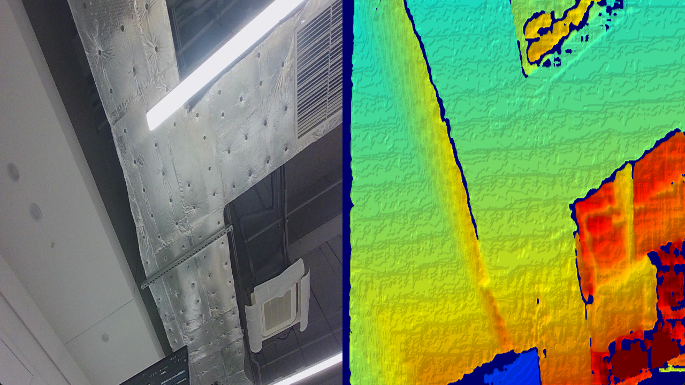

3.1. QuickStart Guide
Get started with the Orbbec Python SDK in 30 seconds using the zero-configuration approach.
3.2. 🎯 Overview
This guide will walk you through your first camera application using the pyorbbecsdk library.
3.2.1. What You’ll Learn
How to connect to an Orbbec camera with zero configuration
How to capture and display synchronized color and depth streams
The basics of the Pipeline API and frame processing
Where to find the structured learning path (beginner → advanced → applications)
3.2.2. Time to Complete
⏱️ 30 seconds (zero-config quick start) or 5 minutes (learning the concepts)
3.2.3. Final Result
You’ll have a working Python script that displays live color and depth streams from your Orbbec camera:

3.3. ✅ Prerequisites
Before starting, ensure you have the following:
3.3.1. Hardware
An Orbbec 3D depth camera (Gemini series, Astra series, Femto series, etc.)
USB 3.0 port (recommended for best performance)
3.3.2. Software
Python 3.8 or higher
pyorbbecsdk2package installed (see Installation Guide)
3.3.3. Quick Verification
Run this command to verify your installation:
# Linux/Windows/macOS
pip show pyorbbecsdk2 | grep Version
You should see the SDK version printed without errors.
3.3.4. Platform-Specific Notes
| Platform | Special Requirements |
|---|---|
| Linux | Install udev rules for USB permissions (see Troubleshooting) |
| macOS | Use sudo -E to run scripts (preserves environment variables) |
| Windows | Run metadata registration script once per device (see Troubleshooting) |
3.4. 🚀 Your First Application
3.4.1. Step 1: Run the Quick Start Example
Run the ready-to-use example with zero configuration:
# Linux/Windows
python examples/quick_start.py
# macOS
sudo -E python examples/quick_start.py
A window will appear showing live color and depth streams side-by-side. Press Q or ESC to quit.
💡 First time? If you’re unsure whether your camera is connected properly, you can verify it first:
python examples/beginner/01_hello_camera.py
3.4.2. Step 2: How It Works
The quick start uses these core API calls:
📚 API Reference: See API Documentation for complete API details
from pyorbbecsdk import Pipeline
# 1. Create and start pipeline (zero-config)
pipeline = Pipeline()
pipeline.start() # Auto-loads default config from XML
# 2. Get synchronized frames
frames = pipeline.wait_for_frames(1000) # timeout in ms
color = frames.get_color_frame()
depth = frames.get_depth_frame()
# 3. Convert frames for display
color_image = frame_to_bgr_image(color) # RGB → BGR
depth_mm = depth_data.astype(float32) * depth.get_depth_scale()
# 4. Stop pipeline
pipeline.stop()
Key Concepts:
Pipeline(): Manages data flow from camera; auto-loads default settingswait_for_frames(): Returns synchronized color + depth framesframe_to_bgr_image(): Converts camera format to OpenCV-compatible BGR imageget_depth_scale(): Converts raw depth values to millimeters
3.4.3. Step 3: Common Customizations
3.4.3.1. Custom Resolution/FPS
from pyorbbecsdk import Config, OBSensorType, OBFormat
config = Config()
profiles = pipeline.get_stream_profile_list(OBSensorType.COLOR_SENSOR)
color_profile = profiles.get_video_stream_profile(1280, 720, OBFormat.RGB, 30)
config.enable_stream(color_profile)
pipeline.start(config) # Use custom config instead of defaults
3.4.3.2. Color-Only Mode
from pyorbbecsdk import Config, OBSensorType
config = Config()
color_profiles = pipeline.get_stream_profile_list(OBSensorType.COLOR_SENSOR)
color_profile = color_profiles.get_default_video_stream_profile()
config.enable_stream(color_profile)
pipeline.start(config)
3.4.3.3. Save Frames to Disk
import cv2
from datetime import datetime
# Inside your capture loop
if color_frame and depth_frame:
timestamp = datetime.now().strftime("%Y%m%d_%H%M%S")
# Save color image
color_image = frame_to_bgr_image(color_frame)
cv2.imwrite(f"color_{timestamp}.png", color_image)
# Save depth as 16-bit PNG
depth_data = np.frombuffer(depth_frame.get_data(), dtype=np.uint16)
depth_data = depth_data.reshape((depth_frame.get_height(), depth_frame.get_width()))
cv2.imwrite(f"depth_{timestamp}.png", depth_data)
📂 View the complete script: quick_start.py
📚 Learn more: For advanced topics like multi-device sync, point clouds, and filters, see the examples directory.
3.5. 🐛 Troubleshooting
3.5.1. “No device found” (Linux)
Problem: Camera not detected or permission denied.
Solution: Install udev rules:
# Option 1: From repository
python scripts/env_setup/setup_env.py
# Option 2: From installed package (v2.1.0+)
# 1. Get pyorbbecsdk installation path
python -c "import pyorbbecsdk, os; print(os.path.dirname(pyorbbecsdk.__file__))"
# Example output: /path/to/site-packages/pyorbbecsdk
# 2. Run setup.py(replace with the path from step 1)
python /path/to/site-packages/pyorbbecsdk/shared/setup_env.py
Note: Without udev rules, you’ll need to run scripts with
sudoevery time.
Quick test: Run the hello camera example:
python examples/beginner/01_hello_camera.py
3.5.2. Permission denied (macOS)
Problem: Permission denied or Library not loaded errors.
Solution: Use sudo -E to preserve environment variables:
sudo -E python hello_camera.py
The -E flag preserves your Python environment (virtualenv, etc.).
3.5.3. Import Error
Problem: ModuleNotFoundError: No module named 'pyorbbecsdk'
Solution:
# Install the SDK and dependencies
pip install --upgrade pyorbbecsdk2
# Verify installation
pip show pyorbbecsdk2 | grep Version
3.5.4. Empty Frames
Problem: frames is always None or frames don’t contain data.
Solutions:
Check timeout: Increase the timeout in
wait_for_frames():frames = pipeline.wait_for_frames(5000) # Wait up to 5 seconds
Verify streams are available: Run the hello camera example to check supported streams:
python examples/beginner/01_hello_camera.pyTry the quick start: The zero-config approach handles defaults automatically:
python examples/quick_start.py
3.5.5. Display Issues
Problem: OpenCV window doesn’t appear or shows blank images.
Solutions:
Check OpenCV installation:
python -c "import cv2; print(cv2.__version__)"
Ensure frames are valid before displaying:
if color_frame is not None: color_image = frame_to_bgr_image(color_frame) if color_image is not None: cv2.imshow("Color", color_image)
3.5.6. Metadata/Timestamp Issues (Windows)
Problem: Timestamps are abnormal or frame synchronization fails.
Solution: Run the metadata registration script once per device:
# Open PowerShell as Administrator
cd C:\path\to\pyorbbecsdk\scripts\env_setup
Set-ExecutionPolicy -ExecutionPolicy RemoteSigned -Scope CurrentUser
.\obsensor_metadata_win10.ps1 -op install_all
See Registration Script for details.
3.6. 📚 Next Steps
Now that you have a working camera application, explore these topics:
3.6.1. 🗺️ Recommended Learning Path
First time? → examples/quick_start.py (30 seconds to first frame)
↓
Basics → examples/beginner/01 → 02 → 03 → 04 → 05
↓
Specific Feature → examples/advanced/ (pick by category)
↓
Build an App → examples/applications/ruler.py
↓
Multi-device/Sync → examples/advanced/14_two_devices_sync.py
examples/advanced/15_high_performance_pipeline.py
LiDAR? → examples/lidar_examples/lidar_quick_start.py
3.6.2. 🎓 Learn by Example
Our examples are organized by difficulty into four levels:
3.6.3. Level 1 — Beginner ⭐
Nine numbered tutorials, designed to be run in order: 01 → 02 → … → 09. Each script is heavily commented and teaches one concept.
| # | Script | What You Learn | Dependencies |
|---|---|---|---|
| 01 | beginner/01_hello_camera.py |
SDK logging, device discovery, print device info | none |
| 02 | beginner/02_depth_visualization.py |
Depth stream, gamma correction, 3D lighting | numpy, opencv |
| 03 | beginner/03_color_and_depth_aligned.py |
Color + depth streams, software/hardware alignment | numpy, opencv |
| 04 | beginner/04_camera_calibration.py |
Read camera intrinsics, distortion, extrinsics | numpy |
| 05 | beginner/05_point_cloud.py |
Generate colored 3D point clouds, save to PLY | numpy |
| 06 | beginner/06_multi_streams.py |
All streams simultaneously (color, depth, IR, IMU) | numpy, opencv |
| 07 | beginner/07_imu.py |
Enable ACCEL + GYRO, read real-time data | none |
| 08 | beginner/08_net_device.py |
Connect to network cameras, decode H.264/MJPG | av, pygame |
| 09 | beginner/09_device_firmware_update.py |
OTA firmware upgrade with progress callback | none |
# Run any beginner example
python examples/beginner/01_hello_camera.py
python examples/beginner/03_color_and_depth_aligned.py # software align
python examples/beginner/03_color_and_depth_aligned.py --hw # hardware D2C
3.6.4. Level 2 — Advanced ⭐⭐
Single-feature scripts organized by category:
Recording & Playback
| Script | Description |
|---|---|
advanced/01_recorder.py |
Record all streams to .bag; GUI preview or headless |
advanced/02_playback.py |
Replay a .bag file; auto-loop; dynamic grid |
advanced/03_save_image_to_disk.py |
Capture frames and save as PNG/16-bit PNG |
Device & System
| Script | Description |
|---|---|
advanced/04_enumerate.py |
List all devices, sensors, supported profiles |
advanced/05_hot_plug.py |
Detect camera connect/disconnect events |
advanced/06_control.py |
Enumerate and set device properties |
advanced/07_metadata.py |
Read per-frame metadata (exposure, gain, timestamp) |
Depth Processing & Alignment
| Script | Description |
|---|---|
advanced/08_custom_filter_chain.py |
Chain Temporal + Spatial + HoleFilling filters |
advanced/09_post_processing.py |
Full post-processing stack; raw vs filtered |
advanced/10_hdr.py |
HDR merge with alternating exposures |
advanced/11_preset.py |
Load depth presets (Default, Hand, High Accuracy) |
advanced/12_depth_work_mode.py |
Switch depth work modes at runtime |
advanced/13_confidence.py |
Access and visualize depth confidence map |
Multi-Device & Network
| Script | Description |
|---|---|
advanced/14_two_devices_sync.py |
Two cameras with hardware frame sync |
advanced/15_high_performance_pipeline.py |
Async callbacks; bounded queue; FPS/latency |
advanced/16_coordinate_transform.py |
2D↔3D coordinate transformations |
advanced/17_laser_interleave.py |
Reduce multi-camera IR interference |
advanced/18_forceip.py |
Assign static IP to network camera |
advanced/19_device_optional_depth_presets_update.py |
Write depth presets to device |
python examples/advanced/01_recorder.py # with live preview
python examples/advanced/01_recorder.py --no-gui # headless
python examples/advanced/08_custom_filter_chain.py
3.6.5. Level 3 — Applications ⭐⭐⭐
Complete working applications combining multiple SDK features:
| Script | Description | Dependencies |
|---|---|---|
applications/ruler.py |
Interactive depth ruler — drag to measure 3D distance | numpy, opencv |
applications/object_detection.py |
Real-time YOLO object detection with depth overlay | onnxruntime, opencv |
python examples/applications/ruler.py
python examples/applications/object_detection.py
3.6.6. Specialized — LiDAR ⭐⭐⭐
For Orbbec LiDAR devices in examples/lidar_examples/:
| Script | Description |
|---|---|
lidar_quick_start.py |
Minimal LiDAR streaming |
lidar_stream.py |
Continuous point cloud viewer |
lidar_device_control.py |
LiDAR-specific properties and controls |
lidar_record.py |
Record LiDAR data to .bag |
lidar_playback.py |
Replay recorded LiDAR session |
3.6.7. 🔗 Additional Resources
Examples README: Complete example documentation
API Reference: Complete Python API documentation
GitHub Repository: Source code and issue tracker
Installation Guide: Detailed installation instructions
Build from Source: Compile the SDK yourself
3.6.8. 📝 SDK Feature Overview
The Python wrapper provides access to these major features:
| Feature | Description | Example |
|---|---|---|
| Quick Start | Zero-config RGB-D streaming | quick_start.py |
| Depth Stream | 16-bit depth data in millimeters | beginner/02_depth_visualization.py |
| Multi-Stream | Infrared camera data | beginner/06_multi_streams.py |
| IMU Data | Accelerometer and gyroscope | beginner/07_imu.py |
| D2C Alignment | Align depth to color coordinates | beginner/03_color_and_depth_aligned.py |
| Point Cloud | Generate 3D point clouds | beginner/05_point_cloud.py |
| Multi-Device | Use multiple cameras | advanced/14_two_devices_sync.py |
| Coordinate Transform | Convert between 2D/3D coordinates | advanced/16_coordinate_transform.py |
| Post-Processing | Depth filters (Temporal, Spatial, HoleFilling) | advanced/08_custom_filter_chain.py, advanced/09_post_processing.py |
| HDR | High dynamic range depth merge | advanced/10_hdr.py |
| Recording | Record and playback streams | advanced/01_recorder.py, advanced/02_playback.py |
| Network Camera | Connect over Ethernet | beginner/08_net_device.py |
| Firmware Update | Update camera firmware | beginner/09_device_firmware_update.py |
| Depth Presets | Load processing presets | advanced/11_preset.py |
| Hot Plug | Detect connect/disconnect | advanced/05_hot_plug.py |
| LiDAR | LiDAR-specific features | lidar_examples/lidar_quick_start.py |
3.7. 💡 Tips for Success
Start Simple: Run
examples/quick_start.pyfirst to verify your camera worksFollow the Path: Begin with
examples/beginner/01_hello_camera.pyand work through 01→09Check Support: Not all features work on all camera models — check the example notes in Level 2
Use Try/Except: Wrap stream configuration in try/except for robust error handling
Always Cleanup: Call
pipeline.stop()andcv2.destroyAllWindows()before exitingPlatform Awareness: Remember macOS may require
sudo -E, Linux may need udev rulesVirtual Environments: Use
venvorcondato avoid package conflictsZero-Config First: Start with
pipeline.start()before adding manual configuration
Happy Coding! 🎉
If you encounter issues not covered here, please open an issue on GitHub.